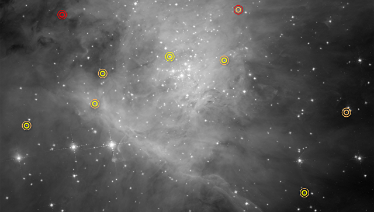
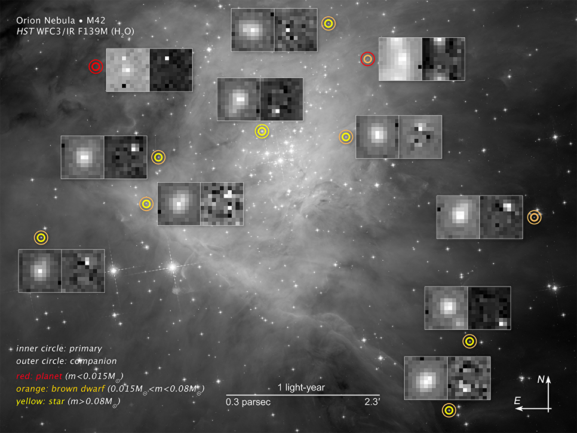

© NASA , ESA, and G. Strampelli (STScI)
МОСКВА, 12 янв – РИА Новости.Орбитальная обсерватория "Хаббл" обнаружила в гигантских звездных яслях в созвездии Ориона почти два десятка коричневых карликов – крайне тусклых "неудавшихся звезд", чьей массы не хватило для запуска термоядерных реакций в их недрах, сообщает сайт проекта.
"Эти звезды настолько холодные, что в их атмосфере может формироваться водяной пар, благодаря которому, собственно, мы и смогли их найти. Вода является универсальным индикатором не только коричневых карликов, но и всех остальных холодных объектов – чем ниже их температура и масса, тем сильнее их будет выдавать пар", — рассказывает Массимо Роберто (Massimo Roberto) из Института космического телескопа в Балтиморе (США).
Коричневыми карликами, первые из которых были найдены в 1995 году, астрономы называют переходные объекты между звездами и планетами. Масса таких несостоявшихся звезд — менее 7% от веса Солнца — слишком мала для возникновения термоядерной реакции в их недрах. Поэтому коричневые карлики постепенно угасают и охлаждаются.
За последние годы ученые открыли ряд необычных черт коричневых карликов – наличие погоды на них, свинцовых и минеральных "облаков" и ряда других свойств, которые заставили многих астрономов считать, что они на самом деле являются очень крупными планетами, а не звездами.
В большинстве случаев, как отмечает Роберто, поиском и изучением таких объектов занимаются инфракрасные телескопы, так как коричневые карлики, остаются почти невидимыми для телескопов, работающих в основном в оптическом диапазоне. Научная команда "Хаббла" разработала новую методику ведения наблюдений и анализа уже полученных снимков, которая, как они надеются, поможет их телескопу найти сотни подобных "темнейших звезд".
© NASA , ESA, and G. Strampelli (STScI)
Коричневые карлики и планеты, найденные "Хабблом" в Туманности Ориона